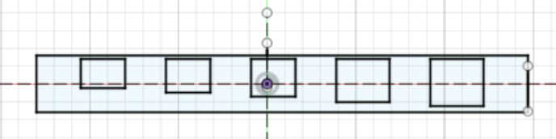
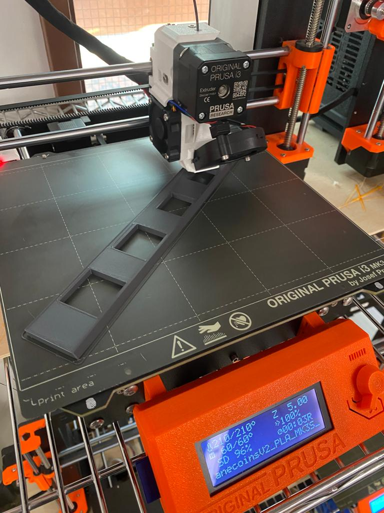
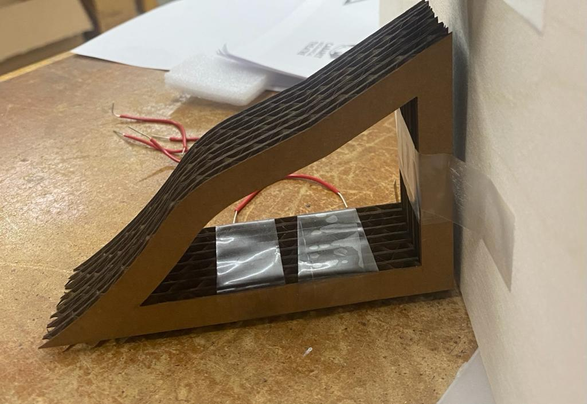

<br>
#### Final project
<h2>Introduction</h2>
An issue that I have is that I have tons of coins.
This is a plastic bag full of coins that I have at home (I have many other coins in my bedroom, purses..). I think I have at least 50 euros in this bag.
The problem is that I never use the coins I have. The thought of having to sort and count them gives me a headache. I'm too lazy to do it. So, I thought of a smart piggy bank that would sort the coins automatically. Pennies with pennies, quarters with quarters...
This would also tell you how much money you have in total and also per category. It would tell you how many dollars you have with your quarters for example.
It would also be possible to withdraw money by saying how much you'd like to withdraw, specifying whether you'd prefer pennies, etc., depending on your needs.
I got the idea from thinking about the product I had come up with for an entrepreneurial course. It was a smart trash can that we called TrashScan that could recognize any kind of waste and sort it accordingly. Creating such a trash can would require an enormous amount of training in waste recognition. I tried to think of something else and it was with this automatic sorting system in mind that I came up with the idea of a smart piggy bank.
<h2>How to make it?</h2>
<p>Here are some inspirations.</p>
<img src="coinsinspiration2.jpg" alt="Image" style="width:550px;height:350px;"/>
<p>For coin sorting, I want to do it mechanically, with a sort of ramp with different-sized holes for the coins to fall through.
I want my piggy bank to be a box that's not completely closed. I want the coins to be visible, like in the photo above. For the couting part, I will need IR sensors and a LCD screen.
I will first prototype it on cardboard and then use wood probably.</p>
<h2>JULY 5<h2>
<p>I started working on the final project. I had already been working on it at home but it was my first day using the lab.</p>
<p>At home, I first tried to design the box but I realised I would need to know how much space the sensors would take for example.</p>
<p>I started by making the ramp and then see if there were some IR sensors at the lab to start getting familiar with it.</p>
<p>To make the ramp, I first looked up the diameters of the various parts on the Internet.</p>
<img src="diametrepieceswikipediapng" alt="Image" style="width:400px;height:400px;"/>
<p>On my ramp, I've sorted the diameters from smallest to largest. First the 10-cent coins, then the 1-cent coins, the 5-cent coins, the 25-cent coins, the 1-dollar coins and the 50-cent coins. (Apparently, the 50 centimes are very rare, so for the moment I'm assuming they don't exist.This doesn't change anything to my ramp, since they're at the very end, so I don't need to make a hole like for the others. As for the circuit and coding, I'll add a sensor if necessary).</p>
<p>At first, I wanted to make rounds with a slightly larger diameter, but I figured rectangles would be safer for the pieces to fall into. I laser cut the ramp, and it was not really a success as the laser cutter cut too much so the coins weren't going were there were supposed to go. I've done some more tests, but I haven't found the perfect ramp yet. I am also not sure how much space I should leave between the holes because I don't know yet where my sensors will be or the size of each "mini piggy bank" depending on the sorting of the coins.</p>

<p>Here is a video of my ramp so far. It still doesn't work very well, as the 1-cent coins fall into the dime hole. But I am working on it.</p>
<video width="600" height="400" controls autoplay>
<source src="Rampprototypev1.mp4" type=video/mp4>
</video>
<p> I really wanted to focus on the sensors so I tried different options.
None of them really worked out. I first used a mini PIR sensor which was not precise at all. I then tried to create a DIY IR sensor with an IR transmitter and IR receiver.</p>
<ul>
<li>Arduino Uno</li>
<li>IR transmitter</li>
<li>IR Receiver </li>
<li>Resistors 220 Ohm </li>
<li>Wires</li>
<li>LED</li>
<li>Potentiometer</li>
<li>Breadboard</li>
</ul>
<img src="circuitIRsensorsDIY.png" alt="Image" style="width:550px;height:400px;"/>
<p>Here is the result that is not very conclusive. Sometimes it worked sometimes it didn't. I am not really happy with this solution.</p>
<video width="600" height="400" controls autoplay>
<source src="IRsensorDIYattempt1.mp4" type=video/mp4>
</video>
<video width="600" height="400" controls autoplay>
<source src="IRsensorDIYattempt1part2.mp4" type=video/mp4>
</video>
<video width="600" height="400" controls autoplay>
<source src="IRsensorDIYattempt1fail.mp4" type=video/mp4>
</video>
<p>I have found IR sensors online that I think would help me. I would need 6 sensors and with DIY ones I don't see how I can fit them in my piggy bank.</p>
<img src="IRsensorsamazon.png" alt="Image" style="width:400px;height:400px;"/>
<p> I'm a bit disappointed with the day because things didn't go as well as I'd hoped. I feel like I'm still in the same place and I haven't made any progress. I'm afraid I'll never be able to make that piggy bank.</p>
<h2>JULY 11 & 12<h2>
<p>I continued to make prototypes of the ramp to sort the coins with the laser cutter to try and find the perfect size, knowing that the laser cutter always cuts a little more. I especially had a problem with the first hole. The 1-cent coin kept falling into it.
Here are the measures I used that finally worked.</p>
<p>I added an inclined plane on one side of the ramp to make sure that the pieces fall in the right place so I needed to 3D print my ramp. This is part of my week 5 assignment (details on this page).</p>

<p>Today, we learnt about sensors so I have decided to try another type of sensors for my final project: piezo discs.
I think this is a good idea and that this will work better than the DIY IR sensors.I started with one sensor and I coded on Arduino so that I would print "coin detected" if it "felt" something. It worked well even for the smallest coins.</p>
<p>Then, I added another piezo disc to my circuit and connected it to another pin on the Arduino board. I changed my code so that it would print "coin detected 1" when a coin fell on it and "coin detected 2" when a coin fell on the other one.Again, it worked really well. I even tried to simulate the fall from the sorting ramp.</p>
<p>Here is the circuit and the codes I used.</p>
<img src="circuitwith2piezosv1.jpg" alt="Image" style="width:400px;height:600px;"/>
<pre>
<code class="language-arduino">
// Pin number for the piezoelectric disk
const int piezoPin = 8;
void setup() {
Serial.begin(9600); // Initialize serial communication at 9600 baud
pinMode(piezoPin, INPUT); // Configure the piezoelectric disk pin as input
}
void loop() {
int piezoValue = digitalRead(piezoPin); // Read the state of the piezoelectric disk
// If a coin is detected
if (piezoValue == HIGH) {
Serial.println("Coin detected");
delay(500); // Wait for 500 milliseconds to avoid bouncing
}
}
</code>
</pre>
<h2>AJOUTER MES CODES</h2>
<p>At the same time, I thought about the structure of my piggy bank. First of all, I'm going to need some ramps to make it easier for the coins to fall. The ramp will be less inclined at the beginning, and that's where the sensors will be placed. I've modeled this on Fusion 360. Now, I have several solutions. Either I print 6 ramps directly with 3D printing, which allows me to make 6 holes in the ramps and make them hollow so I can pass the disc wires through the holes and hide all the wires under the ramps. The problem with this solution is that it's going to take a long time to print. It also means that the ramps have to be bigger, so that there's enough room underneath. Alternatively, I use the laser cutter on cardboard or wood and glue several pieces together to create ramps. In this case, I won't make any holes, but instead I'll have 1 second box glued to the back of my piggy bank (in which I'll have made holes) where I'll put all the wires. </p>
<p>Here's the modeling I've done so far, and also a prototype I made using the laser cutter. I don't think there'll be enough room underneath for a whole circuit.</p>
<img src="toboggansketchv1.png" alt="Image" style="width:500px;height:400px;"/>

<p>I also thought of making funnels to make sure that the parts reached the sensors. I 3D printed a prototype.everything works fine with the funnel, ramp and sensors. Having said that, maybe I can improve the funnels so that they fit better around the part that's going to sort the money.</p>
<img src="photoprototype1funnel.jpg" alt="Image" style="width:400px;height:350px;"/>
<video width="600" height="400" controls autoplay>
<source src="protopypev1videofinalproject.mp4" type=video/mp4>
</video>
<p>I'm still working on how I'm going to make my piggy bank on the ramps, the funnels, where the parts will be, how to place my sensors and the circuit. Right now, I'm a bit anxious about it. I also need to think about walls to separate each compartment I think I'll make an explanatory diagram like I did for my kinetic sculpture.</p>
<p>As I'm REALLY PANICKED about this aspect I've decided to concentrate on getting the code to work for the 6 sensors for now.</p>
JULY 13
As I mentioned, I want to concentrate on the code. So I spent several hours on the subject today. First, I went back to my codes from yesterday (see above), when I'd managed to code for 2 sensors that a coin was detected. So I did the same thing, but with 5 sensors this time.
FOUTRE UN CODE
I then moved on to counting. I started by creating local totals for each sensor based on the coin associated with the sensor. I did this in the order of my ramp: